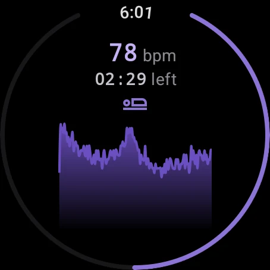
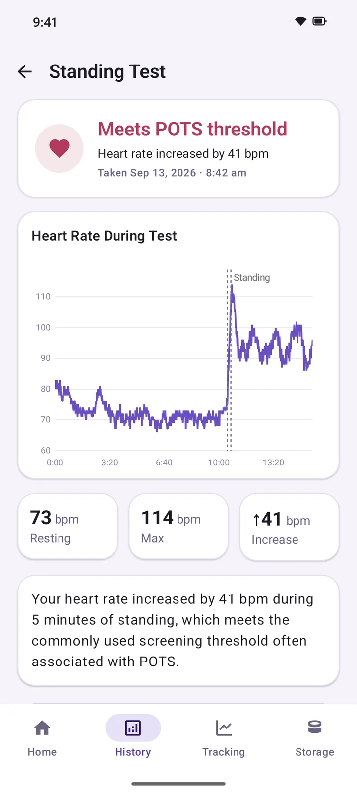
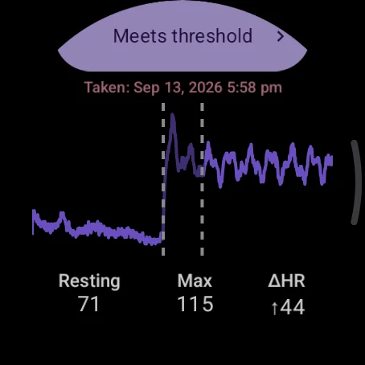
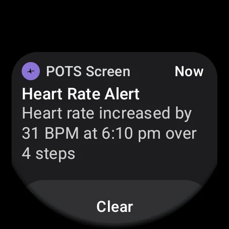
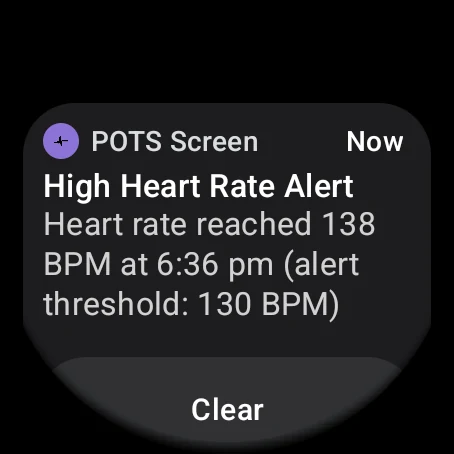
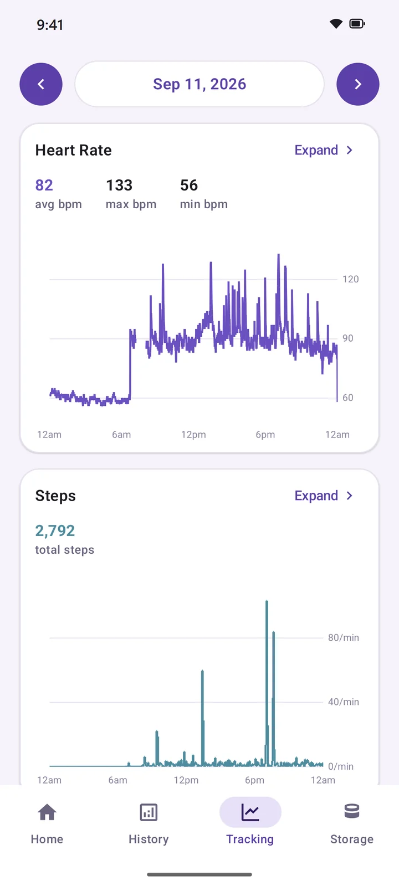
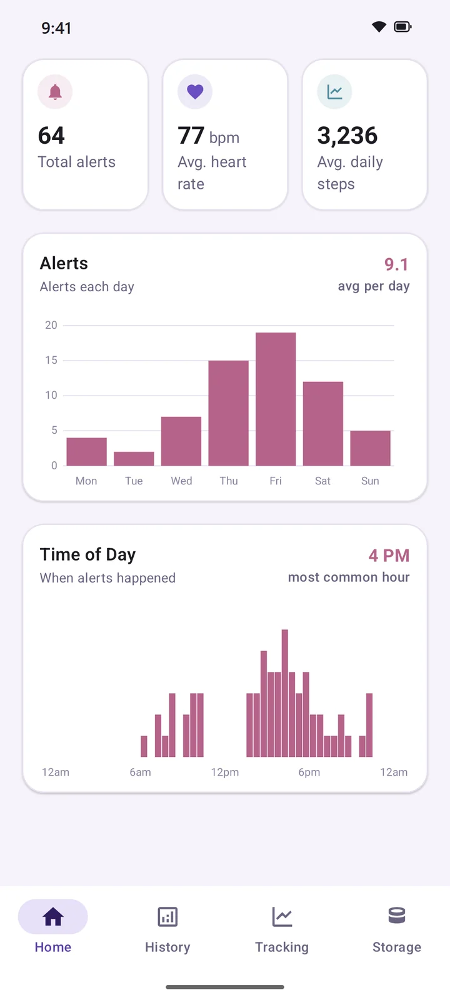
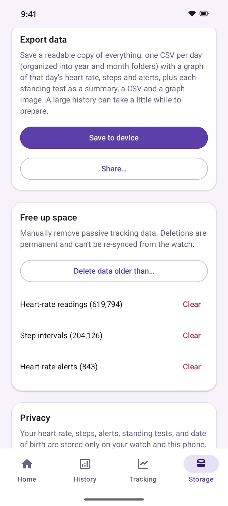

For Wear OS watches and Android phones
Track POTS with your watch and phone.
Take a guided standing test on your wrist, get a buzz when your heart rate spikes while you're still, and see how things change over weeks and months.
How it works
Your watch collects the data.
Your phone is the dashboard.
-
Install it on your phone
Get POTS Screen from Google Play. The watch app installs on your paired Wear OS watch.
-
Take a standing test
Start one from your watch whenever you like. It guides you through lying down and standing up.
-
Wear it as usual
Heart rate, steps and alerts are recorded in the background and sync to your phone on their own.

Standing test
A guided standing test on your wrist
Lie down while your watch measures your resting heart rate. When it buzzes, stand up and stay standing while it keeps recording. No timer, no counting your pulse and no second person needed.
- 10 minutes lying, 5 standing by default. Set each phase anywhere from 3 to 15 minutes.
- Compared with a commonly used screening threshold: a sustained rise of 30+ bpm after standing, or 40+ bpm under 18.
- Every test is saved, so you can see how your results change over time.


Results
See exactly how much your heart rate rose
Each result shows your resting heart rate, your peak after standing and the difference between them, along with the full graph of the test.
- Check results on your watch right away, or look at the details on your phone.
- Browse past tests by week, month or year.
- Share a single test in a couple of taps.


Heart-rate alerts
A buzz when your heart rate spikes at rest
Your watch lets you know when your heart rate jumps by 20 bpm or more within 30 seconds while you've taken fewer than 15 steps, so exercise doesn't set it off.
- Optional high heart-rate alerts at a limit you choose, from 100 to 200 bpm.
- Spike alerts are saved, so you can see which days and times they tend to happen.


Tracking & trends
Heart rate and steps, recorded all day
There's nothing to start or stop. Your watch records in the background, and your phone shows each day's heart rate, steps and alerts. Expand any graph to take a closer look at part of your day.
- Weekly, monthly, yearly and custom overviews of alerts, average heart rate and daily steps.
- A time-of-day chart shows when your alerts tend to cluster.

Export
Easy to bring to your doctor
Export everything in one ZIP file: a spreadsheet-friendly CSV for each day, a graph of each day, and every standing test with its summary, data and graph.
- Files open straight in Excel or Google Sheets, with a README that explains each one.
- Save it to your phone, or share it to email, Drive or anywhere else.
Privacy
Your health data stays with you.
POTS Screen was built to keep what it records on your own devices.
On your watch and phone
Heart rate, steps, alerts and test results are stored only on your devices and sync directly between them. They're never uploaded to the developer or anyone else.
No account, no ads
There's nothing to sign up for, no ads and no subscription. Automatic cloud backup is turned off, too.
Yours to export or delete
Keep everything or only recent months, export a full copy whenever you like, or delete data from the Storage screen.
To help improve the apps, they send basic usage statistics and crash reports to Google Firebase. These never include your heart rate, steps, test results or any other health information. Read the full privacy policy.
FAQ
Questions
Which watches does it work with?
Watches running Wear OS 4 or newer with a heart-rate sensor, such as Google Pixel Watch and Samsung Galaxy Watch4 or later. It doesn't work on watches that don't run Wear OS, like Apple Watch, Garmin or Fitbit trackers.
Do I need both the phone and watch apps?
Yes. The watch does the measuring, and the phone is where your history, trends and exports live. The phone app can't record anything without a watch. You'll need an Android phone running Android 13 or newer.
Can it tell me if I have POTS?
No. POTS Screen is a screening aid, not a medical device. It doesn't diagnose any condition and doesn't measure blood pressure. It's meant to give you and your doctor a clearer, more objective picture of what your heart rate is doing.
How accurate are the readings?
Everything comes from your watch's heart-rate sensor, so results depend on it. How snugly the watch fits, medication, hydration and other factors can all affect a reading. Talk to your doctor about what your results mean for you.
Does it cost anything?
No. It's free, with no ads, subscriptions or in-app purchases.
About
POTS Screen was made by someone with POTS, for people with POTS, to make it easier to track the condition objectively over time.
Requirements
- Android phone with Android 13 or newer
- Wear OS 4 or newer watch with a heart-rate sensor
Important
POTS Screen does not diagnose, treat, cure or prevent any medical condition. Always talk to a qualified healthcare provider about your results.